11월 12일부터 15일까지 혼자 대만 여행 다녀왔었음. 목적은 카발란 증류소와 바, 가품양주를 포함한 리쿼샵 구경이었음. 목표는 카발란 목각과 스뱅 12 CS.
결론적으로 카발란 목각은 구했는데 12 CS는 매물이 씨가 말라서 헤이즐번 10 구매했음.
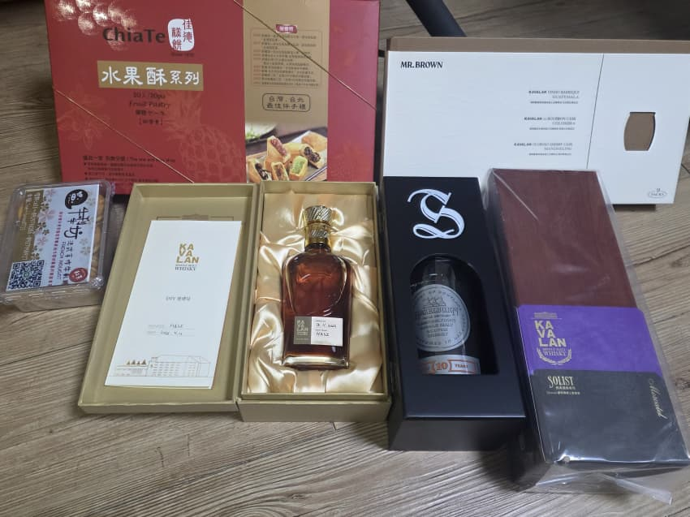
일본은 자주 가 봐서 익숙했는데, 대만은 처음이라 걱정은 했지만 계획한 일정대로 잘 다녀왔음.
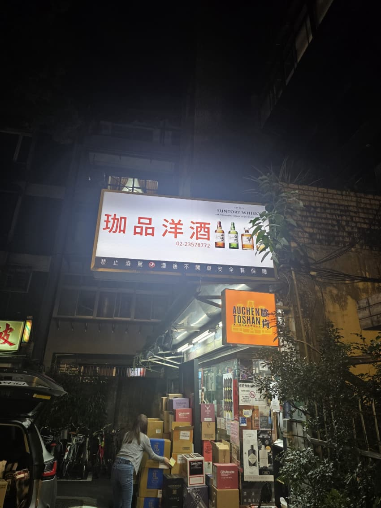
우선 첫날 저녁에 도착한 융캉제 가품양주. 가니까 물량이 들어와서 정리하고 계셨음.
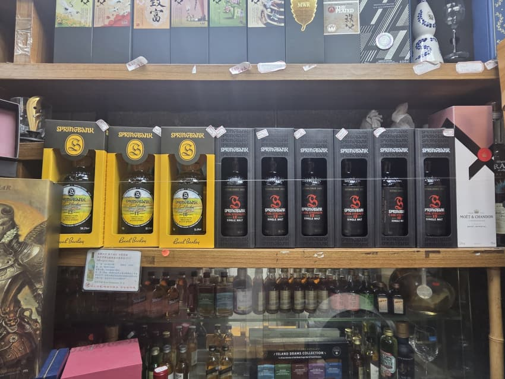
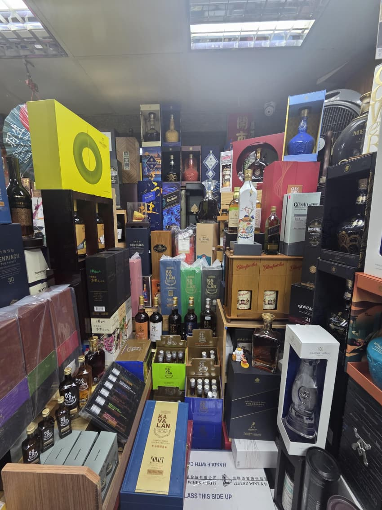
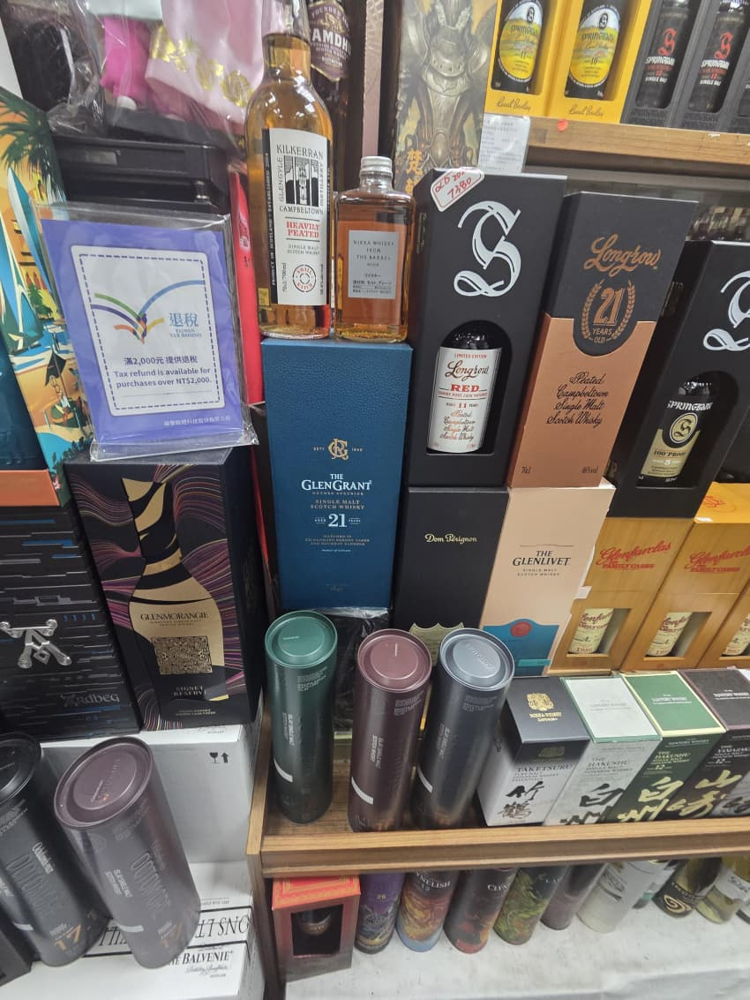
가게 내부는 정말 좁았는데, 술 종류가 되게 많았고 가격이 진짜 눈이 휘둥그레질 정도로 저렴했음. 술 구경하다가 카발란 모스카텔 목각(구형X)이 6600, 현금으로 하면 6480이라고 하길래 우선 구매했음.
사장님이 한국어로 말해도 잘 알아들으심.
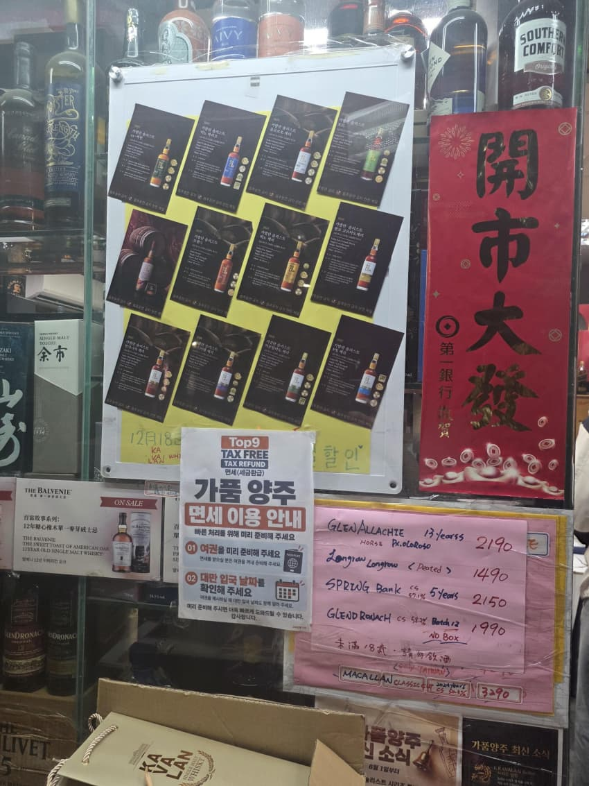
아 그리고 이번에 면세가 생겨서 사장님이 먼저 면세할 거냐고 물어보길래 한다고 여권 드리니까 서류를 하나 주시더라고. 나중에 이거 들고 공항에서 면세 환급을 진행하면 되는 방식이었음. 대신 술 구매한 날짜와 서류 발급 일자가 다르면 면세 안 된다고 하니, 나중에 술 살 위붕이라면 술 사자마자 바로 면세 서류 달라고 하자.
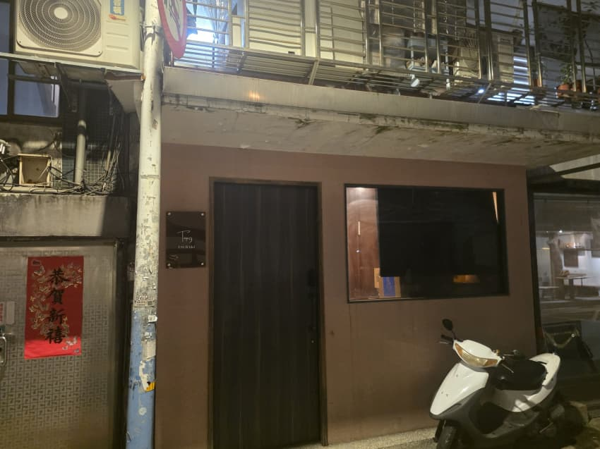
그다음은 한국에서 예약한 탑 츠바키. 처음에는 위치를 못 보고 지나갔다가 지도 보고 호다닥 돌아옴. 안에 들어가니까 사장님도 한국인이고 손님들도 한국인이었음.
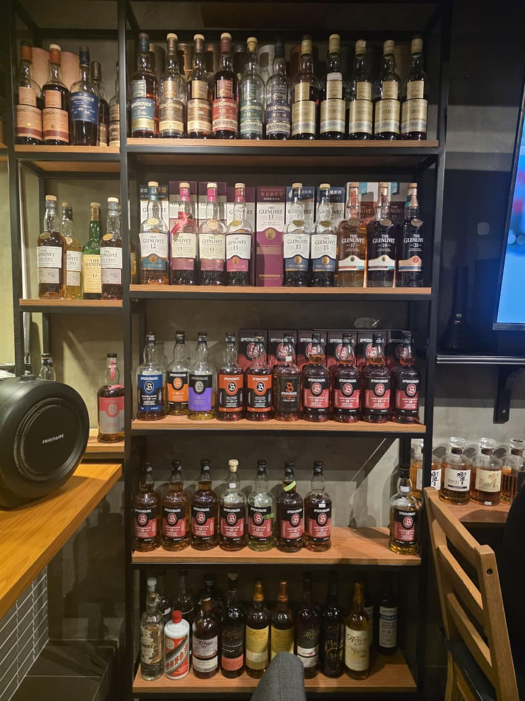
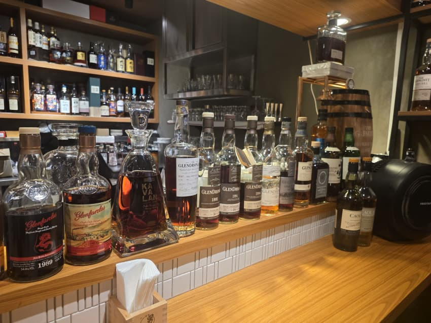
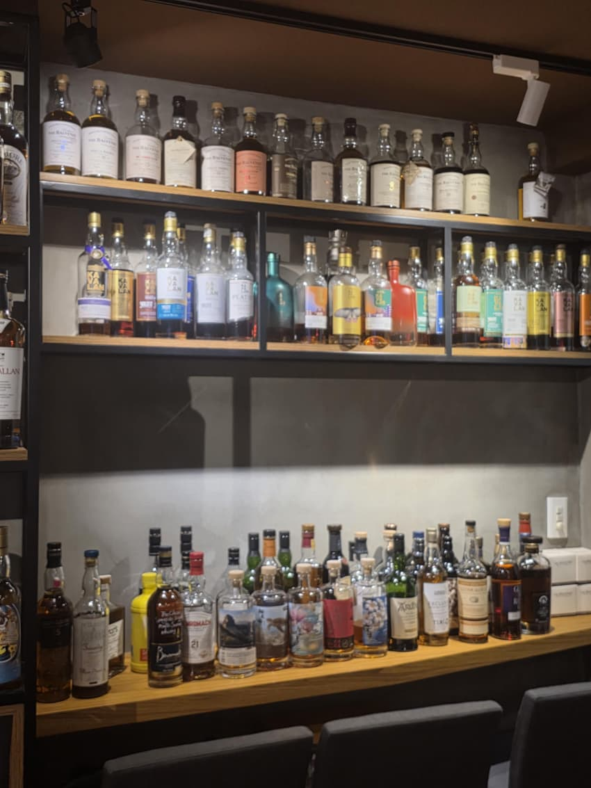
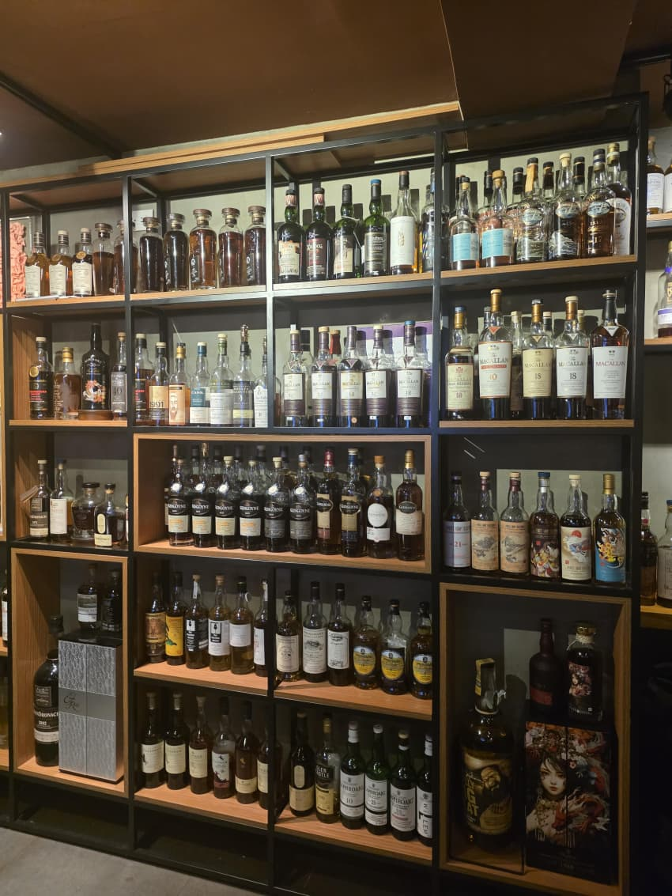
안에 전시된 술만 봐도 이 정도.
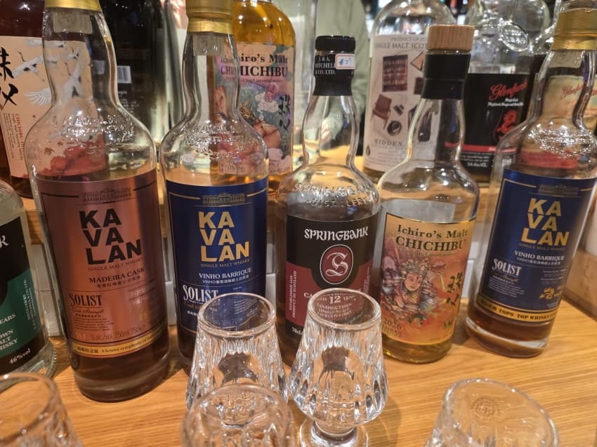
카발란 마데이라, 비노 바리끄(하나는 일반판, 하나는 스토어픽), 스뱅 12 CS 배치 27, 치치부 대만 버전 2026.
카발란을 사실 한 번도 안 마셔 봐서 어떤 걸 마셔 보는 게 좋을지 추천해 달라니까 마데이라랑 비노 바리끄를 추천해 주셨음. 그러면서 일반판 말고 스토어픽도 주셨는데, 같은 비노 바리끄여도 향이나 맛이 더 뛰어났음.
그리고 스뱅 12 CS도 처음 마셔 봤는데, 12년 CS인데 과일 향이나 피니시가 이게 맞나 할 정도로 오래갔음.
치치부 대만판은 내가 치치부를 한 번도 안 마셔 봐서 원래 치치부와 비교는 못 하겠는데 맛있었음.
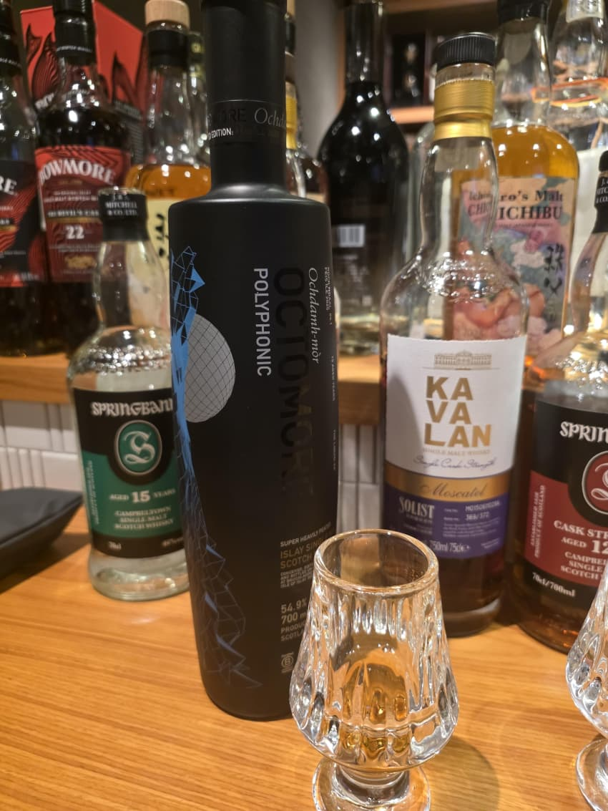
그다음 옥돔 폴라포.
기존 옥돔은 강렬한 피트로 시작해서 피트 맛과 피트 피니시였다면, 이건 향은 비슷한 강피트인데 입에 넣는 순간 피트 맛보다 오히려 과일 단맛이 남. 근데 신기하게 피니시는 또 피트가 느껴져서 무척 맛있었음.
개인적으로 다음에 바틀을 산다면 폴라포로 사고 싶었음.
카발란 모스카텔 산 김에 요것도 한 잔 달라고 해 보니, 내가 좋아하는 진한 셰리 향에 열대 과일이 느껴져서 맛있게 먹었음.
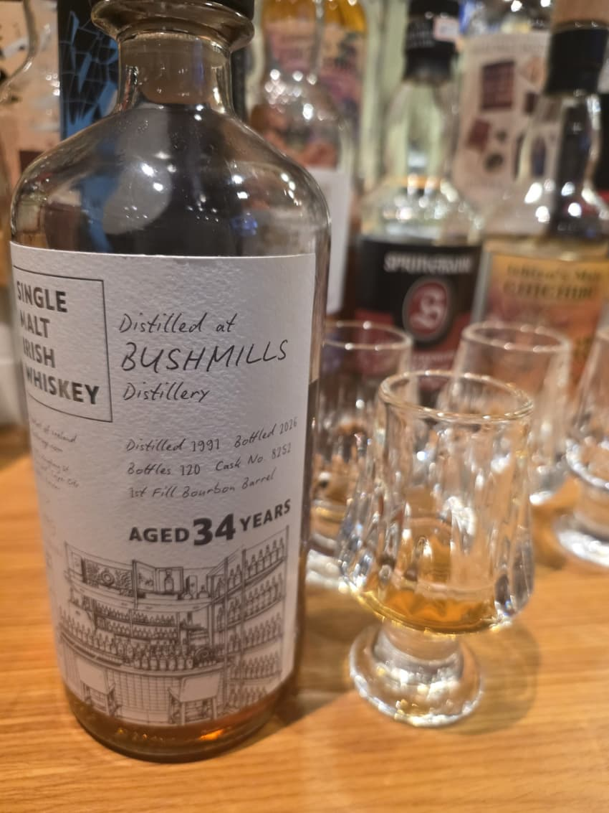
그리고 부시밀 34년.
이건 위갤에도 간단 리뷰를 썼는데,
처음에는 응축되어 있다 보니 따르자마자 마시니까 원래 부시밀의 말린 과일과 복숭아 향보다 피트 스모키 향이 치고 들어오면서 되게 오묘했음. 그런데 5분 뒤에 마시니까 과일 향이 서서히 올라오고 피트랑 과일이 적절하게 조화됐고, 10분이 되니 과일, 복숭아 향이 노즈나 테이스트에서 묵직하게 올라오면서 피트 스모키랑 어울리니까 진짜 맛있었음. 피니시도 은은하면서 열대 과일과 바닐라, 복숭아가 가득임.
나중에 다른 바에 가서 이야기하니까 30분 정도 열어 두고 마셨으면 더 달랐을 거라고 하더라고. 근데 가격이 아마 가품에서 22,000 정도 했는데, 그 가격까지 투자할 정도냐고 하면 잘 모르겠음. 애당초 고숙성 바틀을 산 적이 없긴 하지만 이건 무조건 사야 해 이 정도까지는 아니었음.
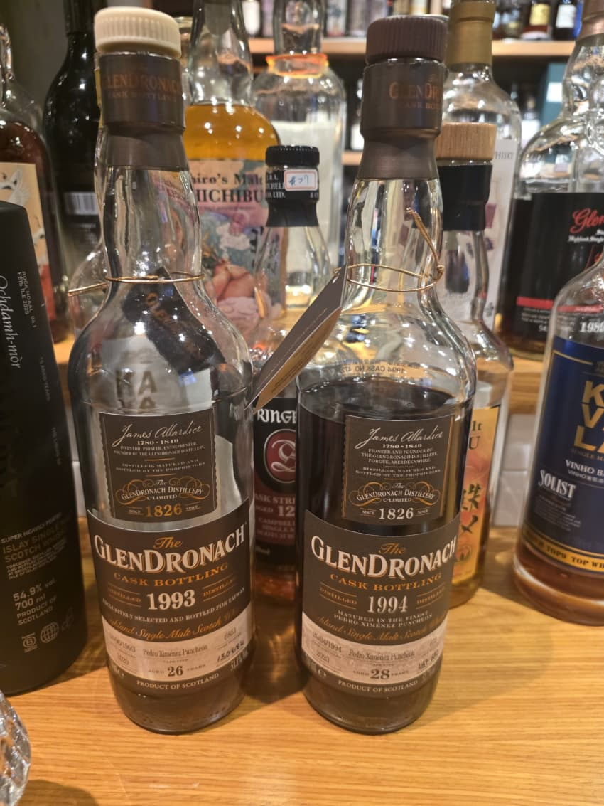
마지막으로 도로롱 1994 28년.
생빈이어서 맛이라도 보자 했는데, 진한 과일 향에 가죽 향, 그리고 꿀, 흑설탕 등 내가 좋아하는 맛이 그대로 다 있어서 나중에 생빈으로 딱 이거 사면 될 듯.
아무튼 이렇게 마셨는데 2200 정도 나와서 8~9만 원으로 원 없이 마셨음.
그다음은 카발란 증류소 투어.
숙소가 타이베이 메인역 근처여서 메인역에서 타이베이 시청까지 지하철로 이동. 타이베이 시청역에서 이란 버스터미널까지 버스로 1시간 10분 정도 이동.
이란 버스터미널에서 카발란 증류소까지는 택시로 이동함(버스도 있긴 한데 배차 간격이 길고 택시도 300 정도여서 택시 탐).
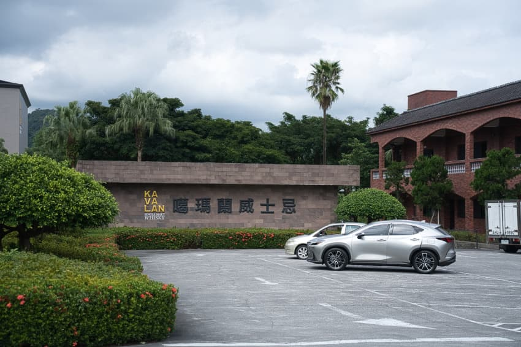
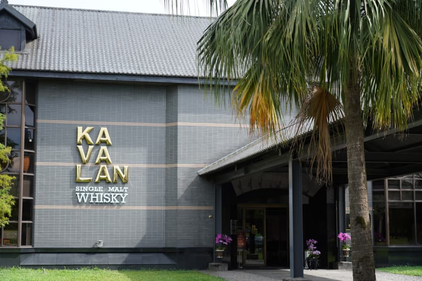
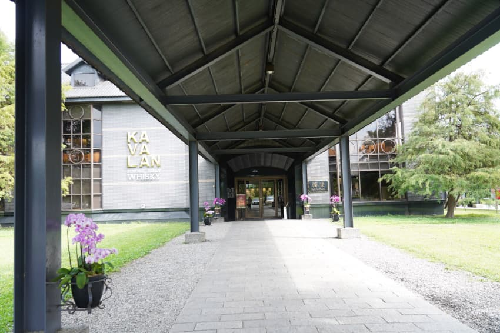
전체적인 카발란 증류소 모습. 날씨도 좋아서 그런지 산책하면서 돌아다니는 것만으로도 기분 좋았음. 건물도 최근에 지어서 그런지 되게 깔끔했고.
카발란 증류소에서 해 본 건
1. DIY 위스키 만들기
2. 웨어하우스 5종 시음
3. 한국어 투어
이렇게였는데, 투어가 오후 2시여서 DIY랑 웨어하우스 시음을 먼저 하기로 했음.
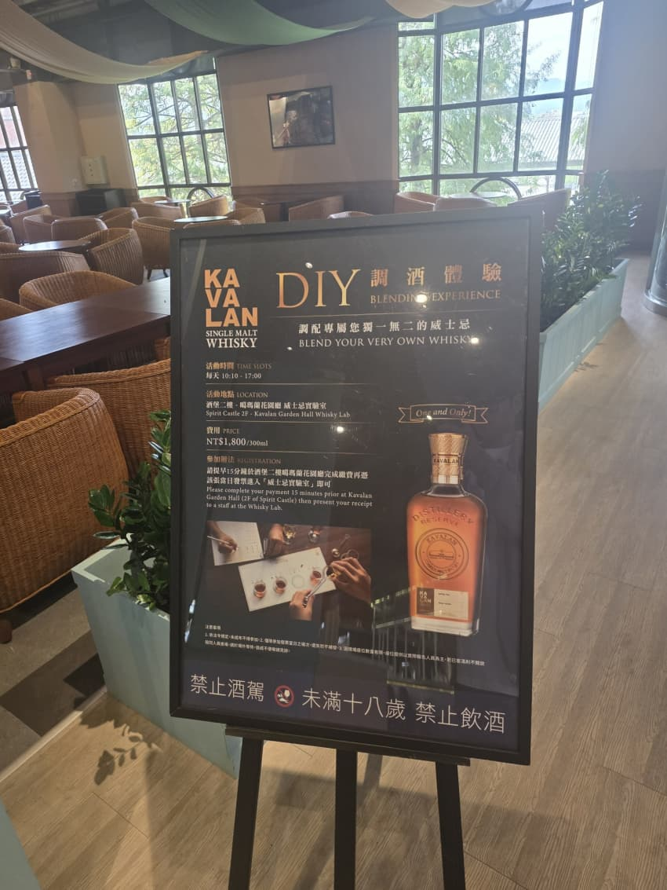
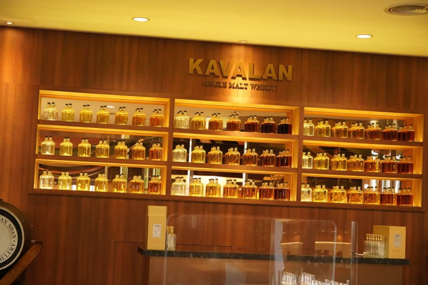
건물 2층으로 올라오면 카발란 위스키 랩에서 신청해서 자신만의 위스키를 만들 수 있음. 원래는 정해진 시간이 있는 걸로 아는데, 신청하자마자 바로 세팅해서 만들 수 있게 준비해 주심.
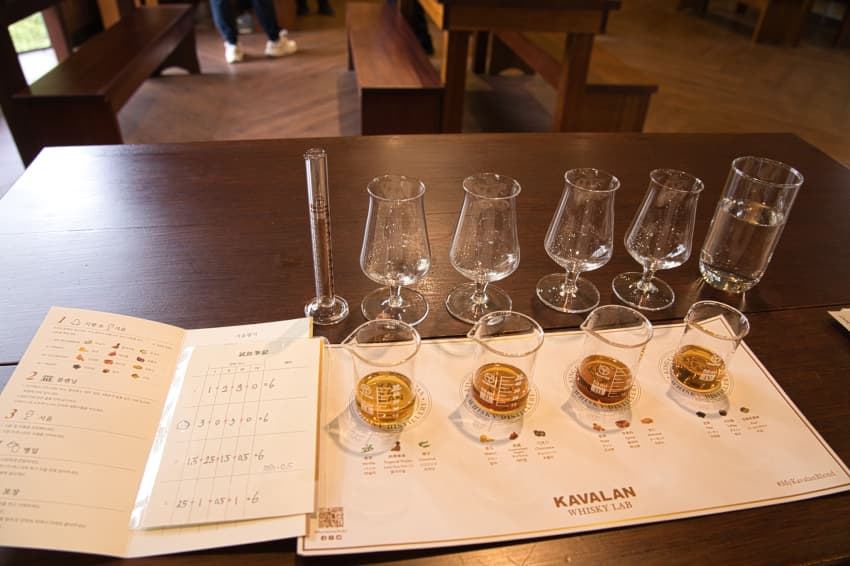
요렇게 4가지 원액을 주면서 각각 비율을 0.5 단위로 총합 6을 맞춰서 자유롭게 배합해서 만들 수 있더라고.
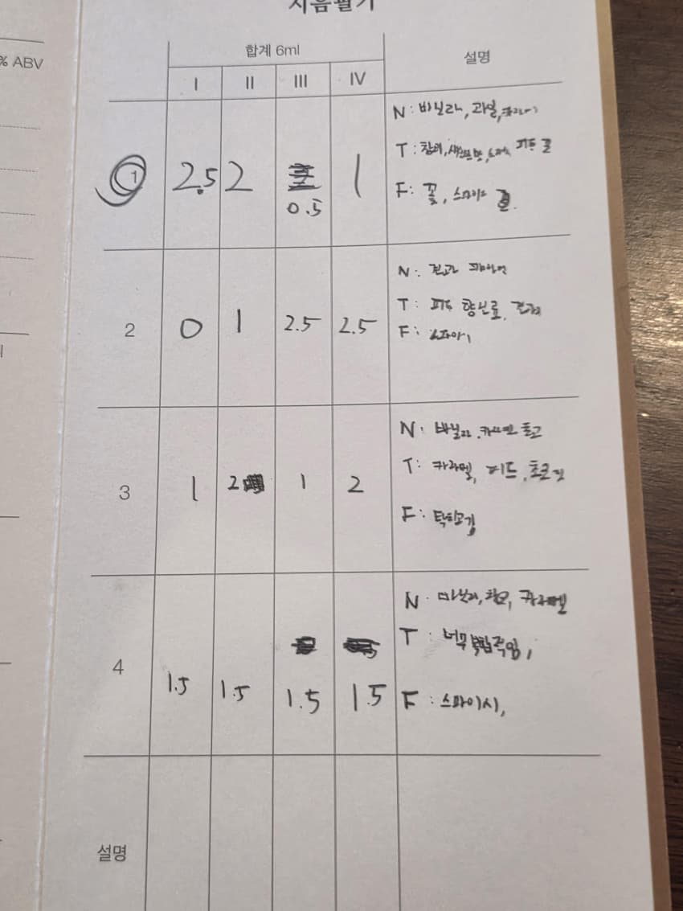
개인적으론 바닐라와 과일 향을 좋아해서 1번 비율로 만들었음.
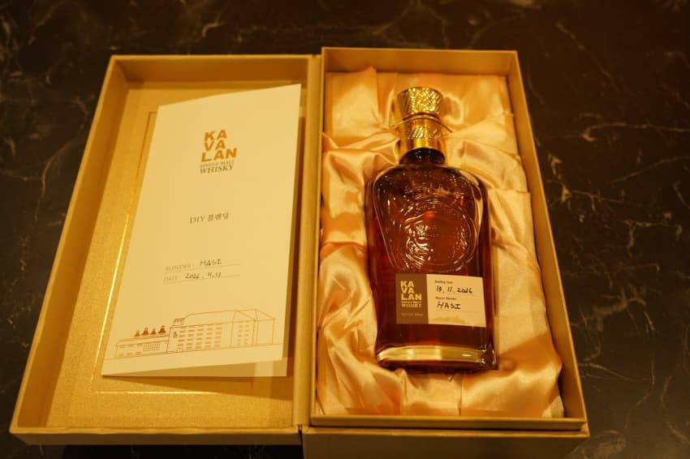
그러면 담당자분이 내가 작성한 비율대로 저런 병에 담아서 만들어 줬음. 양은 300ml여서 보틀 2개 사도 기념으로 딱 가져가기 좋은 듯. 6개월 내로 소비하라고 하니까 연말에 까서 마시면 될 듯.
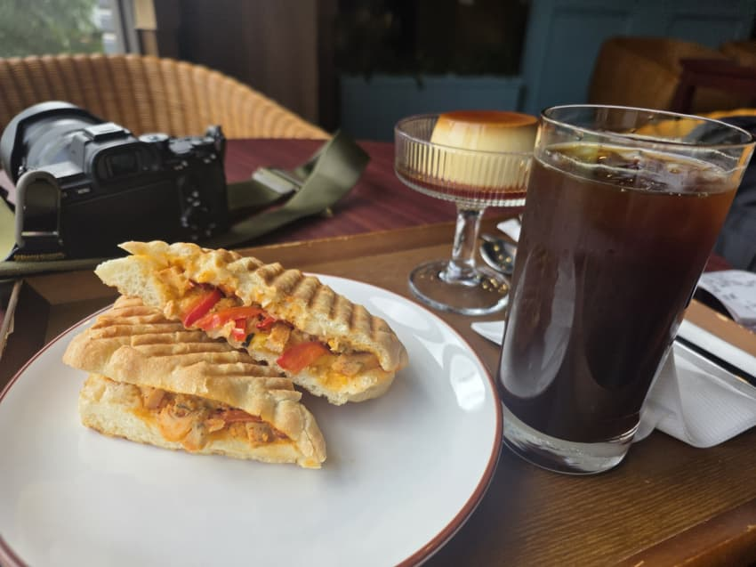
DIY 마치고 카페가 문을 열었길래, 아침도 안 먹었겠다 샌드위치랑 카발란 위스키가 들어간 커피를 시켰음. 커피에서 뭔가 카발란의 열대 과일 향이 나기도 했고, 저 커피 원두를 사용한 드립커피 선물 세트가 있어서 그것도 하나 구매했음.
그다음은 웨어하우스 시음. 이건 1층에서 신청하면 되는데, 아무 때나 가는 건 아니고 원래는 위스키 투어가 1층 시음실에 모여서 끝날 때 웨어하우스 시음 갈 사람을 별도로 모집하더라고. 근데 내 투어는 오후 2시였는데 오전 11시 영어 투어 끝나고 웨어하우스 시음이 가능하다고 해서 그 시간으로 신청함. 다행히 웨어하우스 시음을 아무도 신청 안 해서 혼자 독실에서 즐겼음.
5잔에 2300 정도였는데 언제 마셔 보겠어 하고 크게 지름.
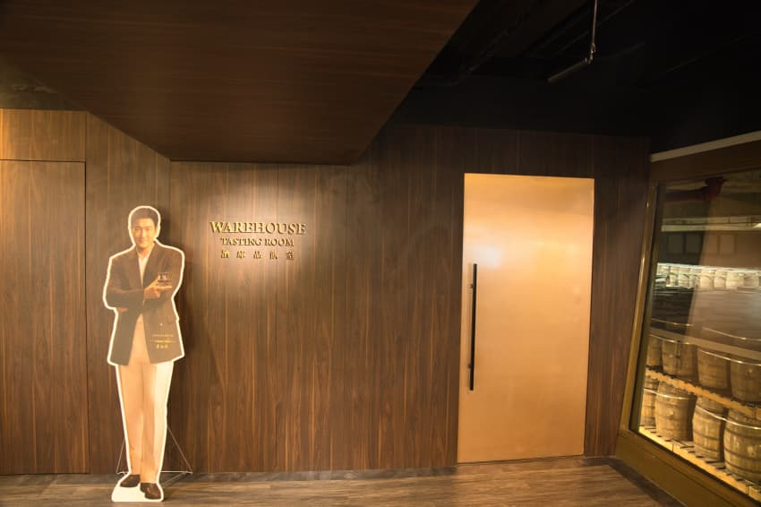
아무튼 이동하면 이런 비밀 공간으로 데려가는데, 저기 나무 벽에 카드를 찍으니까 왼쪽 문이 열렸고
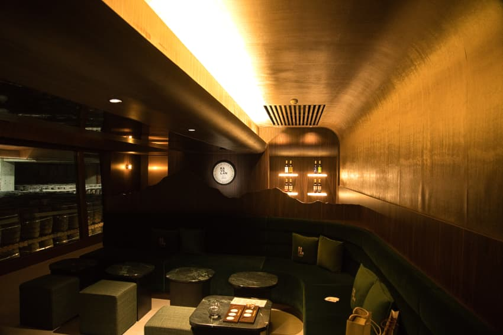
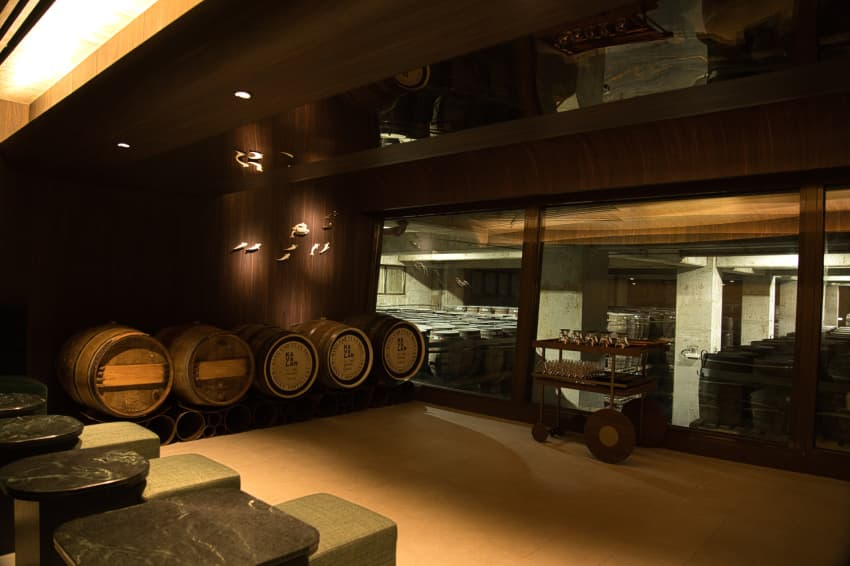
내부는 이랬음. 진짜 고급진 좌석에 앞으로는 카발란 숙성고가 보이고, 왼쪽에 웨어하우스 시음용 오크통 5개가 있음. 시음 시간은 45분 정도 준 것 같은데 요건 상황 보면서 유동적으로 바뀌는 듯.
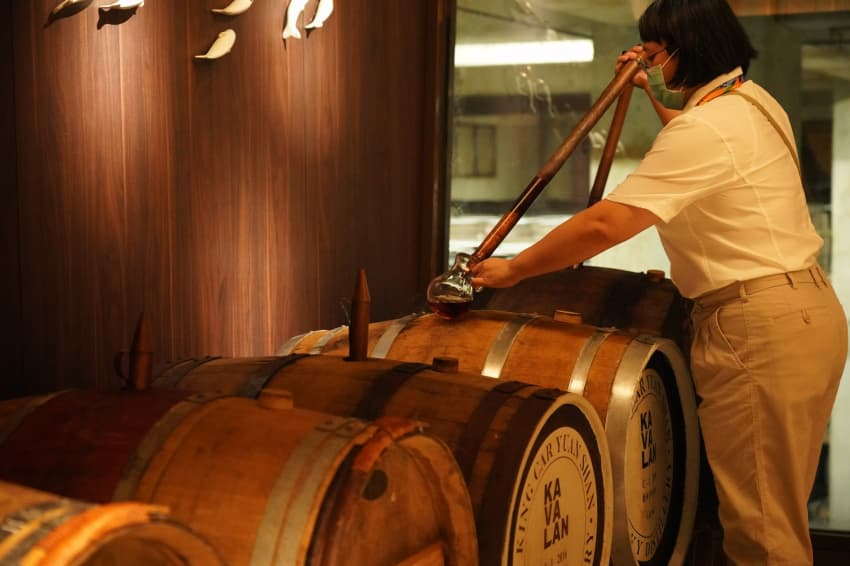
각각 한 잔씩 달라고 하니까 저런 막대기를 하나씩 꽂고 뽑아 주시더라고. 오크통에서 뽑는 모습도 처음 보고 오크통의 위스키를 바로 마셔 보는 것도 처음이라 눈이 호강했음.
그리고 오크통에서 이렇게 따라 주심.
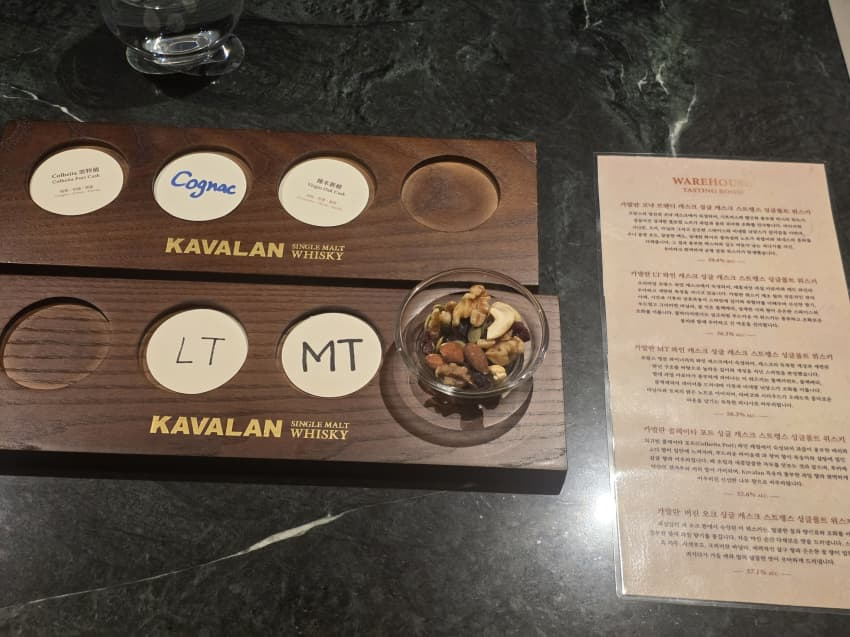
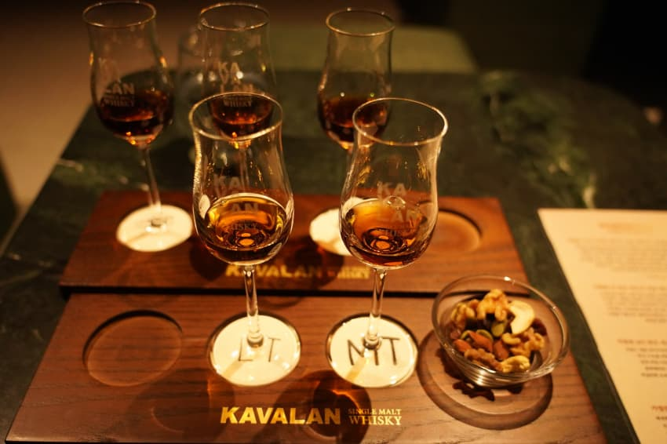
그리고 나온 5잔. 때깔이 너무 영롱해서 보자마자 우와 함. 간단한 안주류랑 물도 주셨고.
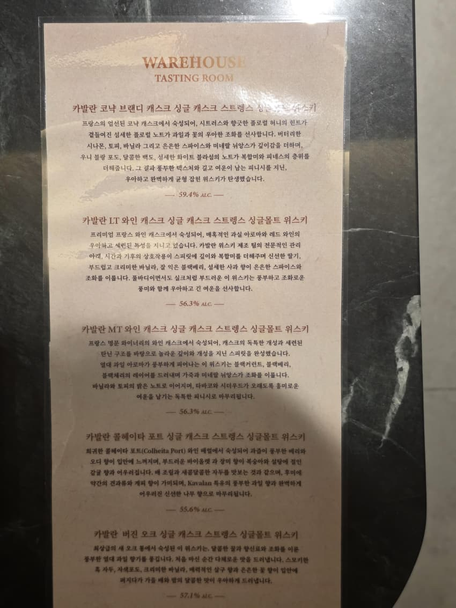
각각 설명은 다음과 같고 이번에 바뀐 게 MT랑 LT였는데, 가이드분은 5대 샤토의 오크통이라고 하면서 무슨 와인인지는 말하지 말라고 했는데 5대 샤토에 저 이니셜이면 다 알 듯.
아무튼 귀한 술이니 한 잔씩 마시면서 최대한 메모하면서 마셨음.
캐스크 스트렝스 5종 시음표
| 순서 | 캐스크 | 도수 | 향 (Nose) | 맛 (Taste) | 여운 (Finish) |
|---|---|---|---|---|---|
| 1 | 콜헤이타 포트 | 55.6% | 꽃, 베리, 꿀, 시트러스 | 배, 꿀, 흑설탕, 계피 | 과일 여운에 약간의 우디함 |
| 2 | 코냑 브랜디 | 59.4% | 꿀, 캐러멜 | 포도, 복숭아, 설탕 느낌 없는 단맛 | 길고 혀가 까끌함 |
| 3 | 버진 오크 | 57.1% | 여름 과일, 꿀, 시나몬, 플로럴 | 스파이시, 바닐라, 자두 | 앞의 두 잔보다 풍부함 |
| 4 | LT 와인 캐스크 | 56.3% | 포도 | 포도, 바닐라 | 가장 은은하고 부드러움 |
| 5 | MT 와인 캐스크 | 56.3% | 과일, 꽃 | 부드럽게 확 퍼지는 꿀, 베리, 바닐라 | 달게 끝나고 탄닌감 |
개인 순위: 5번(MT)이 1등, 가장 부드러운 건 4번(LT), 여운이 가장 풍부한 건 3번(버진 오크)
5번은 입안에서 맛의 변화가 화려하게 느껴져서, 위스키를 마시면서 재미있다고 느낀 건 처음이었음. 사실 모두 다 맛있어서, 팔 생각은 없다고 하지만 판다고 하면 바로 사 마실 듯. 신청비 2300이 아깝지 않은 시음회였음.
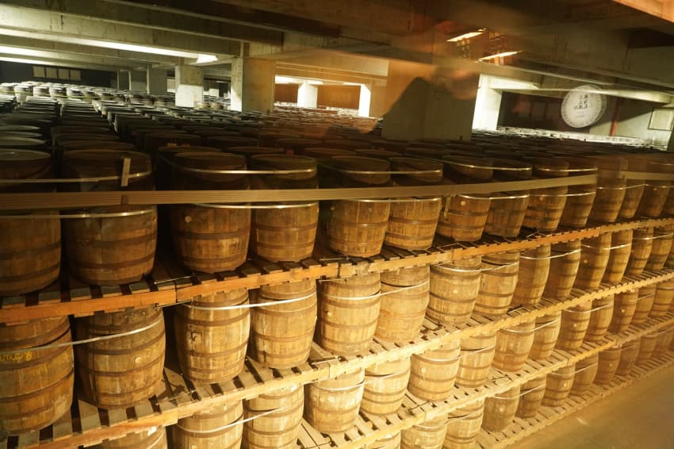
아무튼 다 마시고 오크통 한 번 찍고 나왔음.
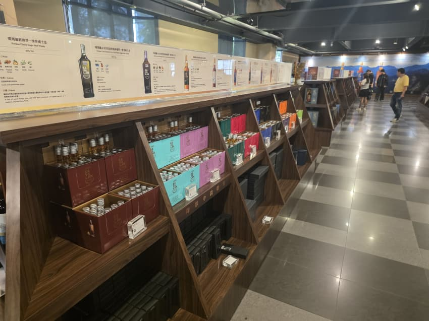
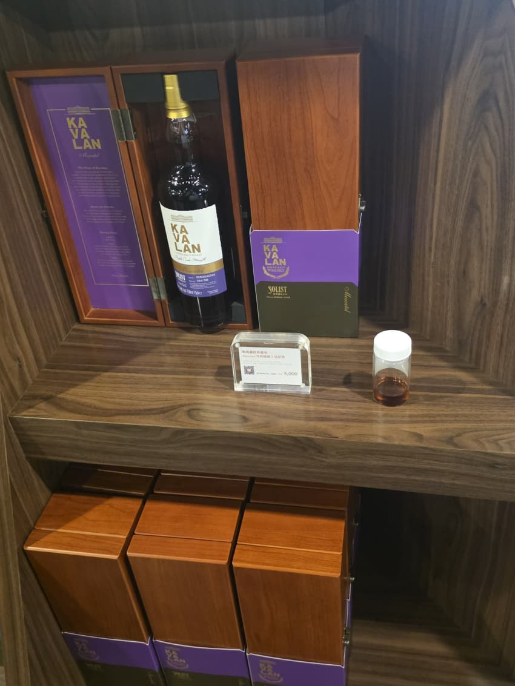
웨어하우스 시음회 마치고는 1층 기념품 숍에 가서 구경했는데, 어제 본 모스카텔도 있었음. 정가는 8000 정도고 가품이 6600이었으니 구할 수 있으면 가품에서 구하는 게 맞을 듯. 근데 미니어처는 여기서만 파는 게 있어서 미니어처 몇 개 사는 것도 추천.
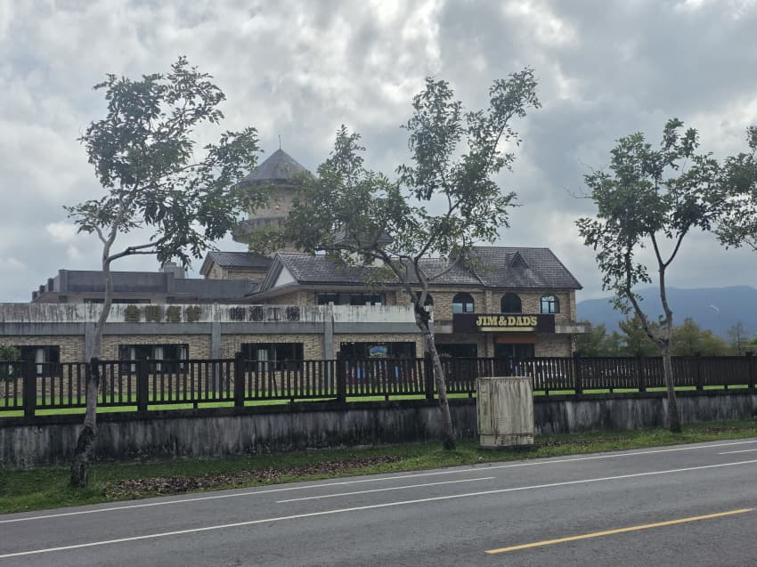
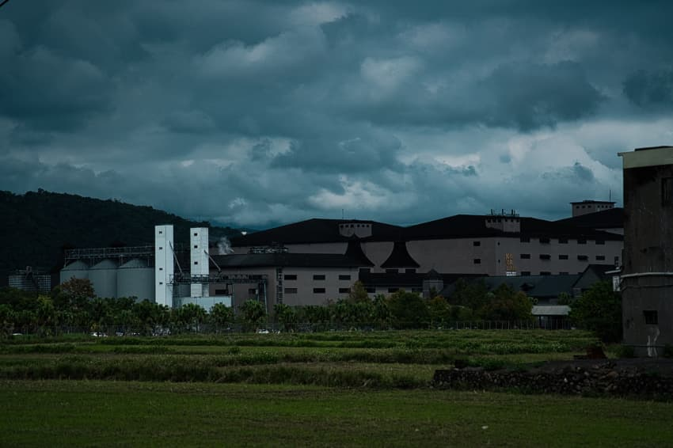
스토어 보고 나니까 12시 반 정도였고 투어 시간이 오후 2시여서 위갤에서 추천받은 브루어리 방문. 카발란 증류소에서 걸어서 20분 정도라 왕복 40분 정도 걸렸는데, 술 깨려고 걸어간다는 느낌으로 갔음. 걸어가다 보면 멀리서 카발란 증류소 전경도 보여서 사진 찍었음.
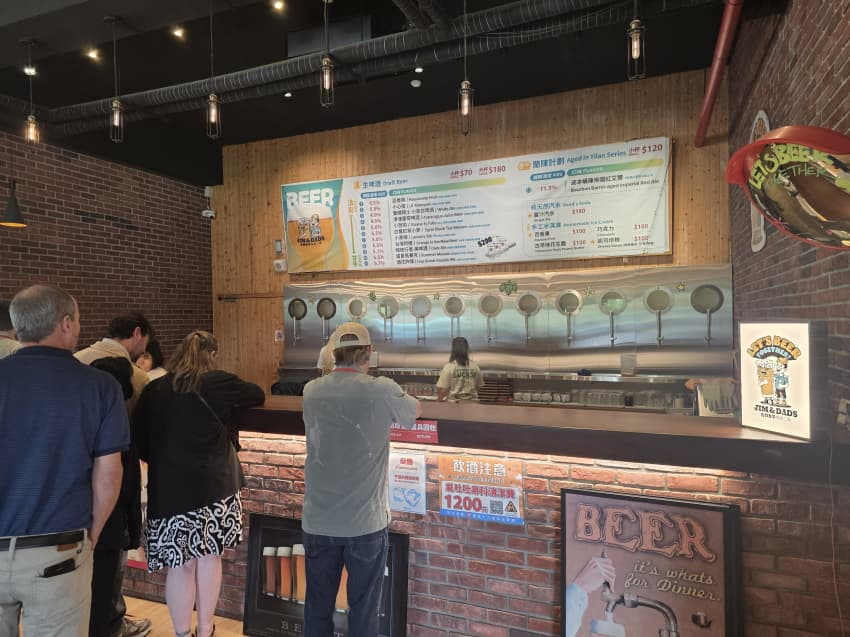
브루어리 도착하니까 수제맥주가 있는데, 숫자가 낮을수록 가볍고 올라갈수록 묵직한 맛이었음. 한 잔씩 시켜 마실 수도 있는데 3잔 샘플러가 200 정도라서, 메뉴 사진 찍어서 번역한 다음에 괜찮아 보이는 걸로 주문함. 원래는 햄버거도 시키려 했는데 주문하면 1시간 걸린다고 해서 감튀만 시킴.
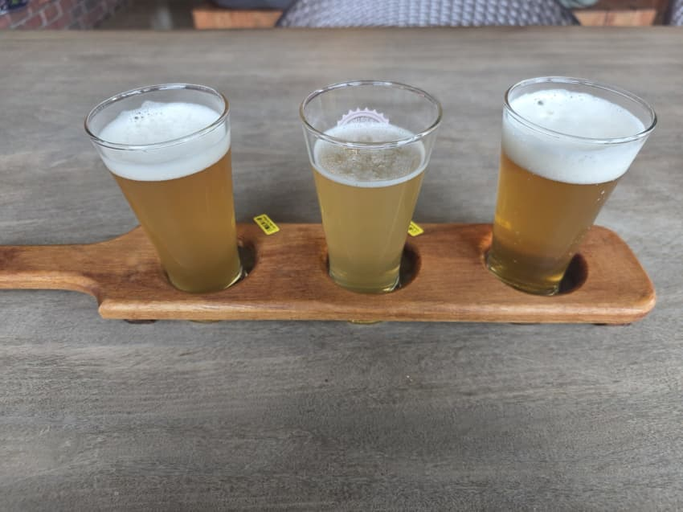
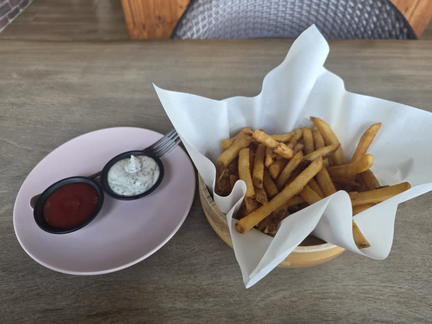
맥주랑 감튀. 감튀는 저 트러플 소스가 맛있었고, 감튀에 맥주는 뭐 말할 것도 없이 좋았음. 2, 3, 6번 시켰는데 6번이 중간인데도 가볍다는 느낌이 들어서, 묵직한 맛을 좋아하면 번호 높은 걸 시켜도 될 듯. 다 먹고 돌아가니 1시 50분 정도라 투어 대기 장소에 가니까 딱 출발했음.
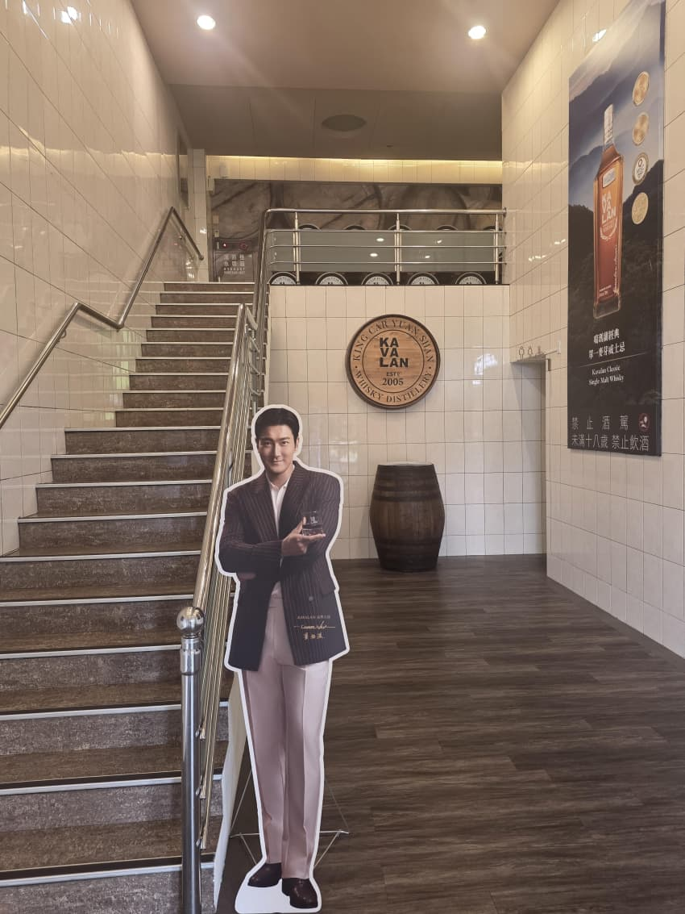
요기에서 투어 시작해서
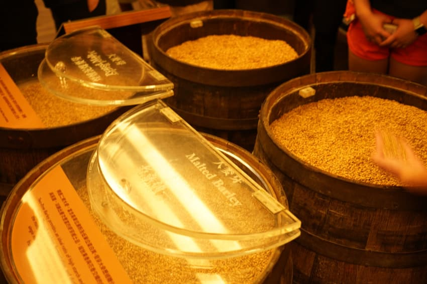
카발란에서 사용하는 몰트
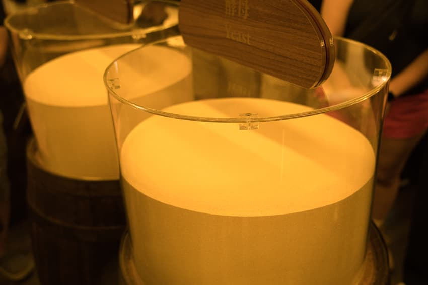
이스트. 이게 카발란의 열대 과일 맛을 내는 주요 원인이라고 했고
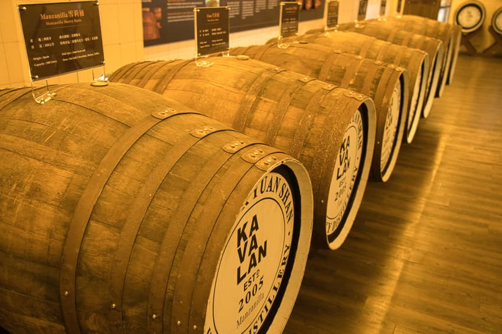
그리고 오크통. 이 오크통에 따라서 비노 바리끄니 피트니 모스카텔이니 정해진다고 설명해 주심.
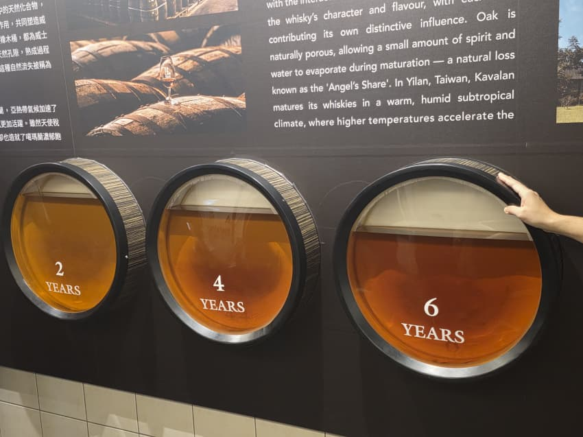
그리고 엔젤스 셰어를 보여 주는 곳. 대만은 날씨가 덥고 습해서 증발량이 많고, 2년 정도만 돼도 색이 나온다고 설명해 주셨음.
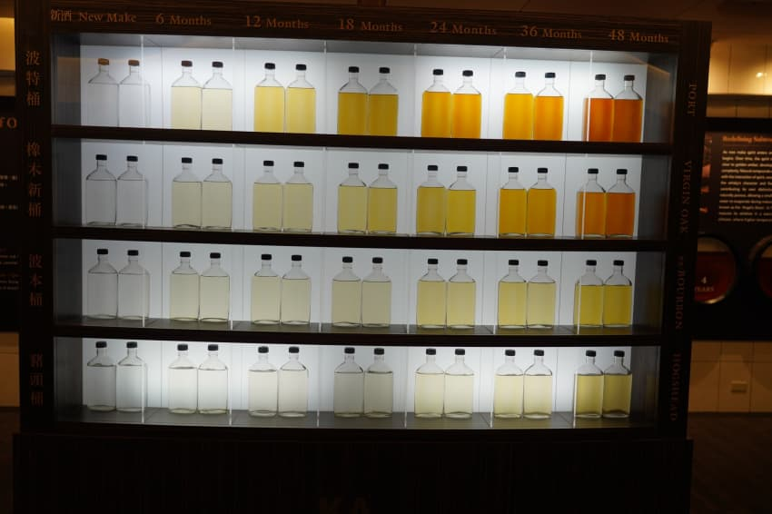
요건 기간과 오크통별 숙성 변화를 보여 주는 전시장이었고
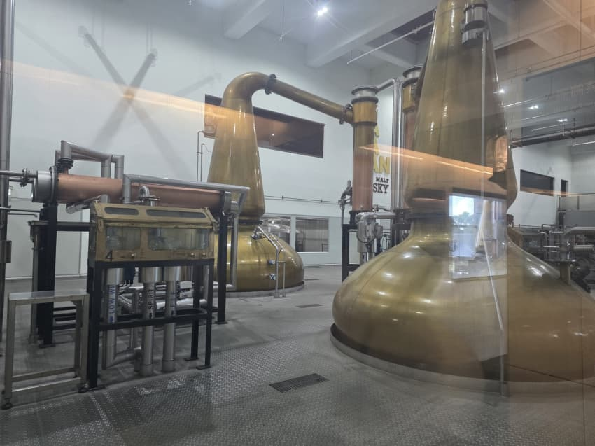
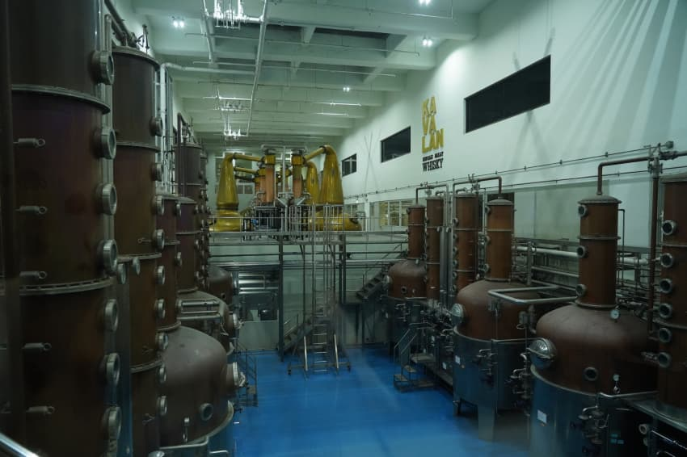
맥아 당화부터 증류기까지 시설을 보고
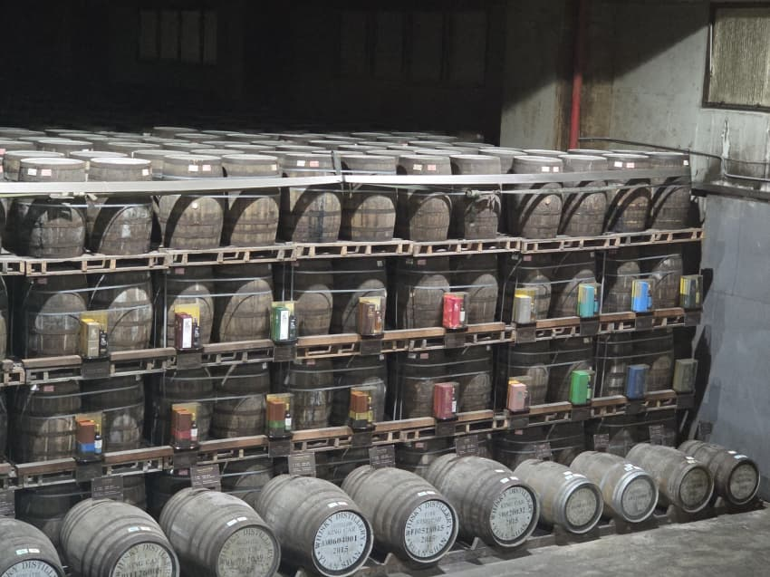
마지막으로 오크통 숙성 창고를 보여 주면서 끝. 몰랐는데, 여기 투어를 마치면 아까 웨어하우스 시음하던 곳으로 나옴.
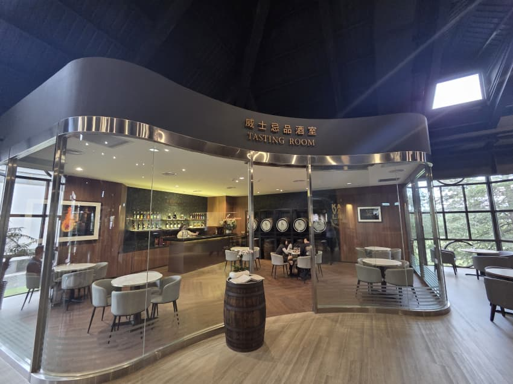
투어 마치고 아쉬워서 모스카텔 수상작을 마시려고 2층 테이스팅 룸에 가서 주문함. 1층 테이스팅 룸은 기본 라인업이랑 논알콜이고, 2층에서 특별한 수상작을 마실 수 있다고 하더라고. 그래서 모스카텔 수상 버전을 마셨는데, 어제 마신 일반 모스카텔에 비해 같은 모스카텔이 맞나 할 정도로 맛이 더 묵직하고 셰리 향이 났음. 이거 마시고 아 구형 수상 보틀 살걸 하는 생각이 들긴 했음.
돌아갈 때는 1층 스토어에서 택시를 불러 줄 수도 있는데, 그냥 우버로 호출해서 이란 버스터미널까지 이동하고 버스 타고 타이베이 시청역으로 복귀했음. 증류소 투어는 닛카 증류소 다음으로 두 번째였는데, 규모가 커서 그런지 체험할 것도 많았고 증류소에서 할 수 있는 건 다 즐기고 와서 재미있었음. 개인적으로 시간을 널널하게 잡고 할 수 있는 건 다 즐기고 오면 좋을 듯.
개인적으로 할 수 있는 것 중에서 추천 순서를 따지면
1. 웨어하우스 시음
2. DIY 만들기
3. 2층 테이스팅 룸 유료 시음
4. 위스키 투어
이런 순이긴 한데, 위에 말했듯 시간이 된다면 다 즐기고 오면 좋을 듯!
길어져서 판다위스키랑 그 외 리쿼샵은 2편으로 올리겠음.
댓글
수집 당시 댓글 43개
옥보모어 · 11.19 19:00:18
· Hasi · 11.19 19:01:46
알중일기 · 11.19 19:02:14
완벽한초보 · 11.19 19:07:08
로스트아크네버다이 · 11.19 19:07:48
그라무소 · 11.19 19:15:16
A'Bunadh · 11.19 19:15:44
글렌도로롱 · 11.19 19:18:11
까막님 · 11.19 19:40:14
· 까막님 · 11.19 19:41:44
· Hasi · 11.19 19:44:17
· 까막님 · 11.19 20:06:56
ㅇㅇ33 · 11.19 19:43:11
98.mile · 11.19 19:44:09
민트초코파인애플 · 11.19 19:59:27
· Hasi · 11.19 20:01:17
· 민트초코파인애플 · 11.19 20:05:04
수제망고젤리 · 11.19 20:36:52
스핏츠 · 11.19 20:52:42
쩝쩝척척 · 11.19 21:41:16
올모스트블랙 · 11.19 22:00:37
· Hasi · 11.19 22:13:06
ㅇㅇ · 11.19 23:24:40
『노게임노라이프』 · 11.19 23:27:36
스코샤샷 · 11.19 23:30:57
ㅇㅇ · 11.20 00:06:07
· Hasi · 11.20 06:58:37
술사줘잉 · 11.20 14:13:49
청보리차 · 11.20 16:36:20
암타황제강시현 · 11.22 00:51:57
ㅇㅇ · 11.22 00:52:58
· ㅇㅇ · 11.22 01:58:34
· heyzle · 11.22 10:22:06
히이잉 · 11.22 01:23:51
히이잉 · 11.22 02:29:08
관타나모 · 11.22 07:46:42
ㅇㅇ · 11.22 08:35:57
더블알발음은아르르 · 11.22 09:50:20
333 · 11.22 11:23:25
ㅇㅇ · 11.22 16:23:29
ㅇㅇ · 11.22 18:11:45
· ㅇㅇ · 11.22 18:27:11
ㅇㅇ · 11.22 18:34:50